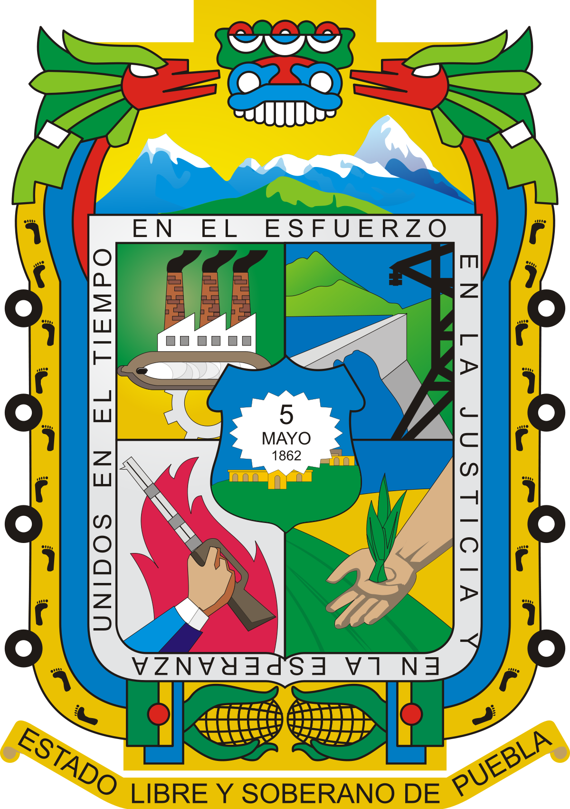

BATALLA DE PUEBLA


 1
1 2
2 4
4 6
6 7
7 8
84 de mayo

-
Batalla 5 de mayo
Se muestra la batalla de puebla
-
Inicio del conflicto de la batalla de puebla
Se muestra la historia del conflicto del 5 de mayo
-
Monumentos de la batalla de puebla
Muestra algunos monumentos de la batalla de puebla
-
Museos que existen sobre el tema
Muestra museos acerca del 5 de mayo
-
Heroes de la batalla
Muestra los heroes de la batalla del 5 de mayo

Aplicacion seis
Fidel Perez Vazquez
5 de mayo
5 de mayo

La colorida marcha de zuavos y fusileros de marina con bayonetas rumbo al cerro de Loreto y
Guadalupe, pasado el mediodía del 5 de mayo de 1862, contrastaba con los adustos soldados
mexicanos que, formados a lo largo de una zanja, defendían a un joven país. Éstos conocían a
los atacantes: después de un primer contacto con ellos a 10 kilómetros de Orizaba (Sánchez,
1962: 11), el primer combate formal se sostuvo en el paso de Veracruz a Puebla. Hoy enfrentaban
de nuevo a esos soldados de fama mundial.
Llegar a la zanja había resultado áspero. Después de Cumbres, el general Zaragoza ordenó
a sus soldados ir a Puebla. En el camino tirotearon repetidas veces a los imperiales, que
avanzaban detrás de ellos, y todos cruzaron por El Palmar, Quecholac y Acatzingo (Garfias,
1992: 19). La marcha hizo estragos. Cuando los mexicanos alcanzaron Puebla, el 3 de mayo,
el cruce de tierra caliente a tierra fría les había ocasionado 40 bajas en un día de camino. Los
ataques ordenados al general De la Llave contra la retaguardia francesa no se realizaron,
pues el oficial aseguró que el mal estado de sus hombres disolvería la columna en el trayecto
a la posición enemiga, y se informaban las deserciones, típicas de los soldados bisoños y
de leva (Sánchez, 1962: 32) de las fuerzas mexicanas que lucharon en Cumbres y las que se
unieron al ejército en su camino a Puebla, es decir, las que venían de Acatlán y Tepeji de la
Seda en busca del general Márquez (Sánchez, 1966: 185). Al cuadro se sumaba la pérdida de
la reserva de parque, así como de 1 042 soldados en la explosión de la colecturía, meses atrás
Aplicacion seis, FPV
inicio del conflicto
En octubre de 1861, Francia, Inglaterra y España suscribieron la Convención de Londres, en la cual se comprometieron a enviar contingentes militares a México para reclamar sus derechos como acreedores por una deuda que ascendía a alrededor de 80 millones de pesos, de los que aproximadamente 69 millones corresponderían a Inglaterra, 9 millones a España y 2 millones a Francia. El contingente europeo estaba conformado como sigue: España: 6000 hombres al mando del General Juan Prim. Francia: 3000 hombres dirigidos por el Contraalmirante Edmond Jurien de la Gravière. Reino Unido: 700 marines bajo el comando del Comodoro Dunlop.2 Poco después de reunirse, los representantes de los tres países enviaron un ultimátum al gobierno mexicano en el que pedían el pago de sus deudas; de lo contrario, invadiría el país. Juárez, quien gobernaba a un país que apenas empezaba a levantarse de la postración económica, respondió con un exhorto a lograr un arreglo amistoso, y los invitó a una conferencia. Acompañó ese mensaje con la derogación del decreto que suspendió los pagos. Al mismo tiempo, en vista de la posibilidad real de una invasión militar que buscara llegar hasta la Ciudad de México, ordenó el traslado de pertrechos y la fortificación de Puebla, así como crear una unidad, a la que se designó como Ejército de Oriente, que fue puesta bajo el mando del general [José López Uraga. En vista del desempeño deficiente de este mando, fue destituido y en su lugar se designó a Zaragoza, quien dejó el Ministerio de Guerra y se dirigió a Puebla para organizar la oposición al avance francés con cerca de 10 000 hombres; cantidad mínima si se toma en cuenta el vasto territorio que debía cubrirse. Reproducción de los Tratados preliminares de la Soledad. Al calce se observan las firmas de Manuel Doblado, Juan Prim, Dubois de Saligny y Charles (Carlos) Wyke Los representantes aceptaron el llamado y en febrero de 1862 se reunieron con los ministros juaristas del Exterior, Manuel Doblado, y de Guerra, Ignacio Zaragoza, en la hacienda de La Soledad, cerca de Veracruz. Gracias a la habilidad como negociador de Doblado se firmaron los Tratados preliminares de La Soledad, en los que se obtuvo el reconocimiento como interlocutor para el gobierno de Juárez y se garantizó el respeto a la integridad e independencia del país. Además, se convino que las negociaciones sobre la deuda se realizaran el Orizaba, donde se establecerían las fuerzas aliadas, además de Córdoba y Tehuacán, para evitar el rigor del clima tropical del puerto; si no se llegaba a un acuerdo, se retirarían a la costa para así comenzar las hostilidades. El 5 de marzo, cuando aún se realizaban las negociaciones en Orizaba, llegó a Veracruz un contingente militar francés bajo el mando de Charles Ferdinand Latrille, conde de Lorencez, quien relevó en el mando a Jurien de la Gravière y se dirigió a Tehuacán. También llegó el general conservador Juan Nepomuceno Almonte, quien de inmediato se proclamó "jefe supremo de la nación" y empezó a reunir a las tropas conservadoras, remanentes de la Guerra de Reforma, para apoyar a los franceses.
Foto de la historia de puebla

Aplicacion SEIS, FPV
Monumentos al 5 de mayo
En la Zona Histórica de los Fuertes hay varias atracciones que vale la pena visitar, la verdad es que para visitar todas si necesitas un día entero, o hasta más. Y es que este lugar cuenta con un valor histórico, patriótico y cultural de gran importancia. Justo antes de llegar a los Fuertes, uno pasa por este monumento, y muchas veces pasa casi desapercibido, pero no debe ser así ya que es de gran importancia. El Monumento a la Victoria (5 de mayo) fue hecha por el escultor y pintor mexicano Ernesto Tamariz. Recibe su nombre debido a que aquí el ejercito mexicano libró una poderosa batalla contra el ejercito francés, durante la Segunda Intervención Francesa el 5 de mayo de 1862. Dicha batalla fue liderada por el General Ignacio Zaragoza, que estaba a cargo del Ejercito de Oriente. La batalla fue ganada por el ejercito mexicano, lo que llenó de orgullo al país, y sobre todo a la gente de Puebla.
fotos del monumentos
Aplicacion SEIS, FPV
Museos del 5 de mayo
Una de las más grandes batallas que ha librado el país tuvo lugar en la ciudad de Puebla, la batalla del 5 de mayo de 1862. En la zona de los fuertes, en el mismo escenario del pasado, se ubica el museo interactivo. El recorrido por el museo utiliza la tecnología más puntera para narrar las acciones militares y la biografía de héroes nacionales como Negrete, Díaz y Zaragoza. Pantallas táctiles, proyecciones en 3-D y contenidos interactivos descargables en dispositivos ofrecen una experiencia única al visitante
Aplicacion SEIS,FPV
heroes del 5 de mayo
Cuando en México se habla del “Cinco de Mayo”, inmediatamente llega a la mente una de las batallas más simbólicas del inconsciente colectivo del mexicano: la Batalla de Puebla. El General Ignacio Zaragoza hizo frente con un pequeño ejército, a las potentes fuerzas francesas de Napoleón III durante la Segunda Intervención Francesa. Ignacio Zaragoza Seguin nació el 24 de marzo de 1829 en la ciudad de Presidio de La Bahía de Espíritu Santo, actualmente Goliad, al sur de Texas, Estados Unidos. Fue el segundo hijo del matrimonio formado por Miguel Zaragoza Valdez y María de Jesús Seguin Martínez. A los cinco años de edad, y tras la independencia del estado de Texas, su familia se muda a Matamoros en el Estado de Tamaulipas donde inicia sus estudios y diez años después, se muda a Monterrey, Nuevo León Durante algunos años se inclina por la carrera sacerdotal, pero la abandona, quizá para continuar con el ejemplo de su padre quien era soldado de infantería. Durante la intervención de Estados Unidos de América en México, entre 1846 y 1848, el joven Zaragoza intentó alistarse como cadete, pero fue rechazado. Desde lejos vio como México perdía más de la mitad de su territorio en una guerra desigual. Fue hasta 1953 que logró ingresar al ejército de Nuevo León, primero como sargento, y luego como capitán de su regimiento. En 1854 decide adherirse al Plan de Ayutla, movimiento que intentaba derrocar al dictador Antonio López de Santa Anna y junto con 100 seguidores toma las armas para defender la causa liberal, misma que no abandonaría hasta el momento de su muerte. En 1860 luchó en favor de la Constitución de 1857. Participó en la batalla de Calpulalpan haciendo frente a las fuerzas conservadoras. Con a esta batalla, ganada fácilmente gracias a un valeroso contraataque, los liberales pusieron fin a la Guerra de Reforma e instauraron las bases de un nuevo sistema republicano. Durante el mandato de Benito Juárez, Zaragoza fue reconocido por su alto sentido de lealtad y patriotismo por ello sirvió al país como ministro de Guerra y Marina, cargo que desempeño hasta 1861. Pero el pasaje más sobresalientes en la vida de este militar, fue cuando la naciente república mexicana, ahogada financieramente por todas las deudas y gastos de las guerras, decide, a través de Benito Juárez, decretar una moratoria y suspender los pagos de la deuda externa.
Heroes del 5 de mayo